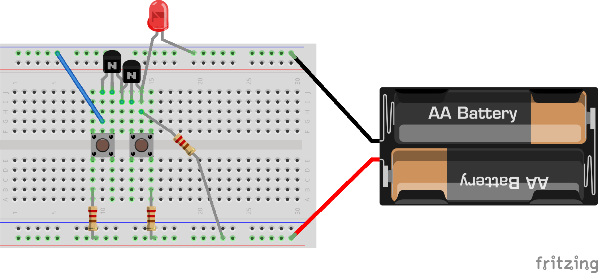

Transistors

Downloads
A chart of binary numbers
Logic gates
Links
NAND Game
Single bit full adder
Combine four of the above into a 4 bit adder
Further readings
Video of a physical binary counter
An analogy to help understand transistors
A very good video on how transistors work
A more in depth intro to transistors